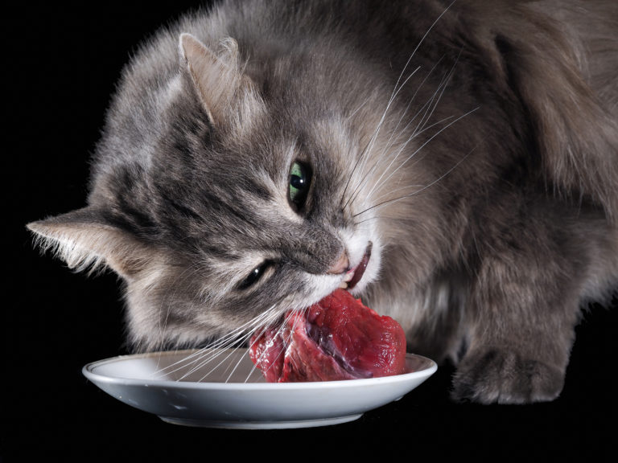
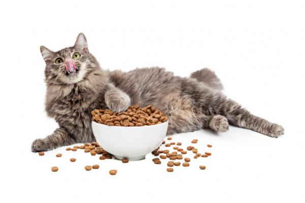

Dieta cruda o BARF: también conocida como dieta ACBA, esta alimentación se centra en ofrecer alimentos crudos al felino, ya sea troceados o pasados por una picadora. Es importante resaltar que es muy importante congelar los alimentos antes de ofrecerselos, para evitar posibles parásitos o patógenos. Descubre 5 recetas barf para gatos muy fáciles de hacer.
Dietas caseras cocidas o semicocidas: precisamente con el objetivo de evitar que nuestro gato pueda contraer cualquier virus o parásito, algunos tutores optan por cocinar la carne o marcarla ligeramente en la sartén. Al igual que en el caso anterior podemos optar por cortar los alimentos en dados pequeñitos o bien triturar todo el alimento para facilitar la ingesta. Descubre 6 recetas para cachos cachorros o 3 recetas gourmet para gatos, ¡a tu felino le encantarán!
Acá les dejo una receta que les va a encantar
Súper alimento para gatos
Se trata de una preparación de carne muy nutritiva. Es una de las recetas caseras para gatos más completa. Contiene todos los nutrientes que un gato puede necesitar y, además, el sabor es agradable para los felinos. Es apropiada para cachorros después de ser destetados y también para gatos adultos.
Ingredientes:
Producto
Cantidad
Carne de ternera o pollo
1/2 kilo
Atún natural
Dos latas de 80 gramos
Hígado de pollo
200 gramos
Huevos
Dos unidades
Verduras cocidas (mezcla de patatas, zanahorias y arvejas)
200 gramos
Preparación:
Hervir las verduras
Cocer los huevos
Asar el hígado de pollo por breves instantes. Si se deja mucho tiempo al fuego pierde sus nutrientes.
Picar el hígado y las patatas en cuadros pequeños.
Mezclar bien todos los ingredientes.
Se guarda por porciones en tarros de vidrios o en bolas cubiertas de papel film trasparente.
Consideraciones:
Cocinar la carne es una opción, no es necesario, pues eso depende del gusto de quien cocina. Cocinar los huevos también es opcional, pero si se dejan crudos es necesario extraer las claras y dejar solo las yemas. Si el gato tiene poca actividad física o está algo pasado de peso se puede prescindir de las patatas.

Alimento Balanceado para Gatos
¿Que es el alimento balanceado?
La comida para gatos tiene la combinación ideal de ingredientes para que pueda obtener los nutrientes necesarios para cumplir con sus funciones metabólicas y mantenerse sano y activo. Para que tu minino tenga una alimentación completa, su alimento debe contener los siguientes nutrientes:
Proteínas: este es uno de los ingredientes más importantes ya que contiene los aminoácidos esenciales para formar y mantener sanos los músculos, piel y pelaje de tu minino. Además, ayuda a fortalecer su sistema inmunológico.
Grasas: funcionan como fuente de energía para mantener a tu gato activo. Además, las grasas sirven de protección para sus órganos internos y ayudan a que su piel y pelaje estén sanos.
Fibra: ayuda a cuidar la digestión de tu felino, evita el estreñimiento y ayuda a controlar enfermedades digestivas.
Vitaminas y minerales: combinación de ingredientes que ayudan a que tu gato tenga un crecimiento normal. También hacen que tenga dientes y huesos fuertes, protegen su vista, piel y pelaje.
Beneficios del Alimento Balanceado
Es el único alimento que ofrece la cantidad adecuada de nutrientes en cada porción.
Es fácil de medir, lo que te permitirá darle a tu minino las porciones adecuadas.
Ayuda a tener una mejor asimilación de los nutrientes importantes para el crecimiento y la salud de tu peludo.
Le dará las energías necesarias para mantenerse activo.
Ayuda a que tu gatito tenga una mejor vida cuando sea mayor.

Además, algunos gatos necesitan una dieta prescripta por un veterinario, ya que padecen alguna patologia, ya sea gastrointestinal o renal, entre otras. Muchas marcas realizan este tipo de alimento, lo importante es apoyarte en un profesional para identificar el más adecuado para tu gato.
Aquí comparto algunas veterinarias y pet shops que tienen muy buenos precios de alimento balanceado creado para dieta prescripta. Los locales se ubican en Capital Federal, pero realizan envíos a todo el pais: